What changed on October 22 and 23
In one lineClosed book, no calculator. Nothing comes into the room with you, so the cheat sheet is now something to memorize. There is also a third past paper to practise on.
Study order
In one lineWatch the two new videos, sit the makeup paper cold, mark it against the key, then memorize the sheet.
- Step 1 · videoEvery conceptnewThe growth model and every idea that hangs off it, including the new education vs productivity puzzle.
- Step 2 · videoHow to approach itnewThe four-rung ladder every paper climbs, what the keys reward, timing and traps.
- Step 3 · prep pageSit the 2025 makeup cold80 minType it with a timer and no notes, like Monday. Answers start hidden.
- Step 4 · prep pageMark it against the key20 minDid each answer open with a verdict and name a course concept? Fix the habit, not the wording.
- Step 5 · night beforeMemorize the sheet2 pagesCover it and recite the growth model, the Canada numbers and the ladder.
New videos
Oct 23 · watch these first1 Every concept you need
One pass through the course, built on the professors' growth model. Read the cards below before you watch and again after: they are the points every answer is built from.
Remember these
- Growth = more workers + more output per workerReal GDP grows through the labour channel or the productivity channel. Only productivity keeps raising living standards.
- Productivity has three sourcesCapital deepening, labour quality (skills, education) and innovation. Institutions sit underneath all of them.
- Diminishing returns to capitalA water buffalo transforms a subsistence rice farm; one more tractor barely moves a Canadian wheat farm. So poor countries can grow fast by investing, but catch-up is conditional.
- Institutions are the root causeCapital and skills are proximate causes. Inclusive institutions (the two Nogales) allow creative destruction; extractive ones block it.
- Middle-income trap and the three i'sInvestment gets a country to middle income. Infusion (adopting foreign technology and practices) and then innovation get it out.
- Structural transformationWorkers leave low-productivity farms for industry and services, and inequality tends to rise then fall (Kuznets curve).
- Potential vs actual GDPPotential is what the economy can sustainably produce. Below it in a slump, above it in an unsustainable boom.
- Canada grew by adding peopleBusiness productivity fell from 83% of the US level in 2002 to 73% in 2019. Business investment is weak.
- New: degrees are not productivityCanada has the most degrees in the OECD (nearly two thirds of adults); Germany has 34.3% yet is over 30% more productive. Education needs capital, the right industries, adoption, competition and matched skills to pay off.
- Trilemma logicThree goals, only two at once. Say which two you pick and what you give up.
- Could appear: trade and ChinaGains from trade come mostly from imports: competition, scale, infused ideas, cheaper capital goods. China is strong on all three i's and slowing anyway.
Chapters
Then work it on the prep page
2 How to approach the exam
All three past papers follow the same shape, so you can walk in knowing what each question will ask. The ladder below is the shape; the rules under it are what the answer keys give marks for.
Every paper climbs the same four rungs
- 2025: potential vs actual crop yields
- 2024: the trilemma
- Makeup Q1: define the puzzle
- Labour channel vs productivity channel
- Name the concept: diminishing returns, structural transformation
- Usually Canada, with class numbers
- Makeup Q2: three Canada hypotheses; Q3: Germany only
- First words: "Yes, good idea" or "No, bad idea"
- Either side scores if reasoned
Remember these
- Verdict in the first sentenceThe keys give marks for the answer itself before the reasoning. Never make the marker hunt for it.
- Name the course conceptThe keys literally ask for terms like "structural transformation" and "diminishing returns to capital". Use the course words.
- Use the exhibit's numbersQuote what the chart shows and cover both countries or both lines. A skipped given fact is a lost mark.
- Answer only what is asked"Define the puzzle" means do not explain the cause. "Focus on Germany" means no Canada.
- Make hypotheses truly differentCapital, industry mix and adoption are three ideas. Three flavours of "not enough investment" are one.
- Time by marksRead everything for 4 minutes, then give each question 76 × its marks / total. Makeup paper (50 marks): 15, 23, 15 and 23 minutes.
- Plan in bullets firstThirty seconds of verdict, concept, evidence beats rewriting. Stay under each word cap.
- If time runs outA verdict plus a named concept on every question beats one polished answer and a blank.
- No calculatorRound to easy numbers: 75 / 30 = 2.5; 70 / 2% = 35 years to double.
Chapters
Then practise it
Earlier videos
Oct 18 · backup and deeper dives3 Concepts: the midterm blueprint
The key ideas from scratch: growth accounting, capital deepening, institutions, conditional convergence, structural change, potential GDP, Canada and the trilemma. Watch it first, so the exam videos can use the words without stopping to define them.
Chapters
Each chapter starts where the slide changes. Click one to play from there.
- 0:00Opening and the six-part blueprint
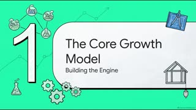
0:41Growth model: labour force, productivity, institutions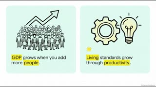
1:23GDP and GDP per person, Rule of 70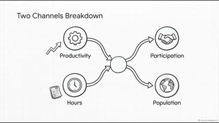
2:20Two channels: output per hour and labour input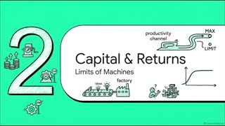
2:46Diminishing returns: water buffalo against tractor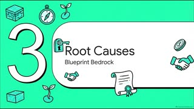
3:46Inclusive or extractive institutions, creative destruction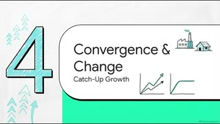
4:55Catch-up, the three i's, Kuznets curve- 6:16Potential GDP, Canada at 73%, the trilemma
- 7:44Exam map: which idea answers which question
Check these slides
| At | On the slide | What the sources say |
|---|---|---|
| 0:30 | Faint background caption reads 'Ovvertep generations model' (also behind the Rule of 70 and Potential GDP cards). | No such term in the sources. The framework is the professors' 'Our Long-Run Growth Model' from the 2024 key appendix. |
| 1:00 | Model drawn as a chain: Labour Force, then Productivity, then GDP Growth, then Institutions; productivity listed as only capital deepening and innovation. | Labour force growth and productivity growth are two parallel channels into real GDP, with institutions underneath both. Productivity also includes labour quality. |
| 2:30 | 'Two Channels Breakdown' draws productivity and hours flowing into a node and out to participation and population, as if those were results. | Real GDP = output per hour x hours per worker x participation x population. Output per hour is productivity; the other three are labour input. |
| 2:52 | Captions are the image prompts: 'A singular large, robust water buffalo standing in a field.' and 'A tiny, simple sketch of a tractor.' | The point is diminishing returns: a water buffalo has a huge return for a subsistence rice farmer, while an expensive tractor makes only a marginal difference on a Canadian wheat farm (2024 key). |
| 7:00 | Big '73%' sits over US vs Canada investment and capital stock sketches with no label. | 73% is Canada's business productivity vs the US in 2019 (83% in 2002). The investment figure is 54 cents per worker for every US dollar in 2024 (87 cents in 2014). |
| 8:00 | Exam map row 'The Trilemma' shows policy autonomy, exchange rate stability and capital mobility. | The course trilemma (2024 Figure 1a) is stable population growth, housing affordability and revived productivity growth. |
| 8:05 | Exam map row 'Diminishing Returns' draws y = f(k) as a falling curve. | Output per worker rises with capital per worker, but each extra unit adds less: a rising curve that flattens. |
Then work it on the prep page
Read it highlighted in the case reader
Cases
the exhibits as stories4 Cases: three macro puzzles
The cases as stories: Mozambique against Germany on crop yields, Canada's growth trilemma, and Krugman on potential GDP. It explains what each exhibit shows before any question is asked about it.
Chapters
Each chapter starts where the slide changes. Click one to play from there.
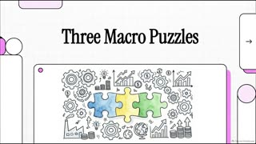
0:00Opening: three puzzles behind the papers- 0:52Crop yield chart: 18% against 83% realized
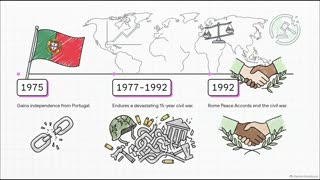
2:26Mozambique's story: war, farm jobs, poverty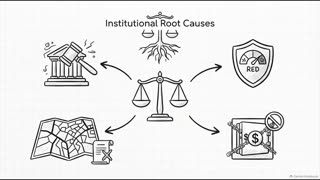
3:26Institutional root causes of the yield gap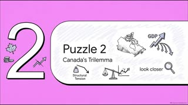
4:40Canada's trilemma: three goals, pick two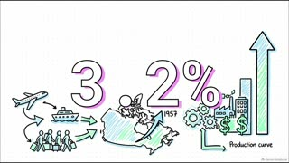
5:57Canada's numbers: 3.2%, minus 1.3%, investment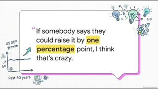
7:15Krugman's email: potential GDP barely moves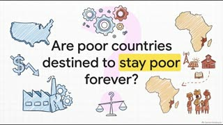
8:28Are poor countries doomed? Capital and returns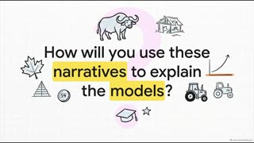
9:47Closing: tie each story to a model
Check these slides
| At | On the slide | What the sources say |
|---|---|---|
| 1:20 | Redrawn Economist chart has garbled text ('Actusl crep yield', 'coantriss get ricker', 'yotential yislds', 'Tacso Adsmapeolss and Diego Restoccla') and a '6x' label floating over the potential line. | Use the real chart: 'Actual crop yields go up as countries get richer', source Adamopoulos and Restuccia, NBER 2018. 6x is land per person; actual yields differ about 5x (about $260 vs $1,240 a hectare). |
| 5:58 | Next to the 3.2% population figure, a rising bar chart and gears carry the label 'Production curve'. | The sources pair 3.2% population growth (2023, fastest since 1957, 98% from migration) with real GDP per person falling 1.3%; no production curve is involved, so the rising bars should not be read as output per person going up. |
| 7:40 | Sketch beside the Krugman quote labels the flat line 'US GDP growth'. | Krugman is describing US potential GDP growth over the past 50 years; actual GDP swings around it. |
| 9:30 | Diagram says a Canadian wheat farm 'already has five tractors' and 'a sixth tractor makes almost no difference'. | The 2024 key gives no tractor count: a water buffalo has a huge return for a subsistence rice farmer, while an expensive tractor makes only a marginal difference on a Canadian wheat farm. |
Then work it on the prep page
Read it highlighted in the case reader
Exam
2 videos · how the keys award marks5 Exam: the 2025 paper, question by question
Exam format and word caps, then the 2025 crop yield paper question by question against the key, then the timing plan.
Chapters
Each chapter starts where the slide changes. Click one to play from there.
- 0:00Opening and the six-part plan
- 0:35Midterm format: points and hard word caps
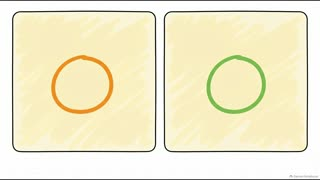
1:05Reading the 2025 crop yield chart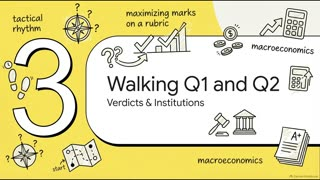
1:41Q1: natural resources view mostly contradicted- 2:45Q2: institutions as the hidden driver
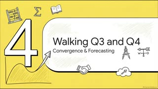
3:28Q3: convergence, 0.36 against 2.5, debt gap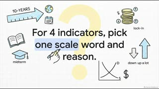
4:26Q4: poverty count with 3% population growth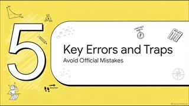
5:35Errors in the 2025 key and traps- 6:18Exam-day timing plan and checklist
Check these slides
| At | On the slide | What the sources say |
|---|---|---|
| 3:35 | Q3 slide shows an 'Employment Shares' bar chart for 2015, 2018 and 2021 and debt ratings AAA, BBB and CCC. | The question gives one snapshot, no time series: farms are over 70% of Mozambique's jobs and about 25% of GDP (about 1% of both in Germany). Ratings are CCC+ for Mozambique and AAA for Germany; there is no BBB. |
| 4:30 | Q4 slide has garbled labels ('down up a lot', 'lock-in', 'midterm') and an unrelated supply and demand sketch. | The five allowed answers are up a lot, up a little, down a little, down a lot, ambiguous. Pick exactly one per indicator. |
| 4:55 | Poverty table shows 1.03^10 = about 1.34 with a stray '(midterm tactics)' label and no note that 3% is assumed. | 3% a year is an assumption taken from the Session 7 line that Africa's population grows close to 3% a year. Say so in the answer. |
Then work it on the prep page
Read it highlighted in the case reader
6 Exam: the growth model and the 2024 paper
The professors' growth model, then the 2024 paper (Canada's trilemma and the Krugman email) rubric by rubric.
Chapters
Each chapter starts where the slide changes. Click one to play from there.
- 0:00Opening and the five-part plan
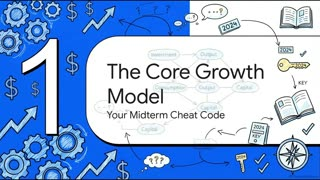
0:33Growth model: labour force and productivity channels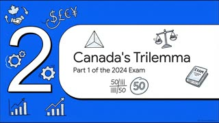
1:36Trilemma 1a: home building is the hinge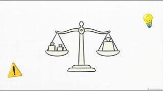
2:401b: pick two goals, accept the cost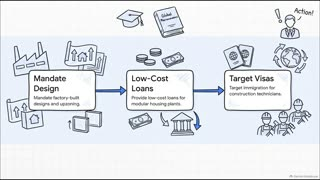
3:121c: factory-built housing as the escape- 3:50Krugman 2a: potential GDP as capacity
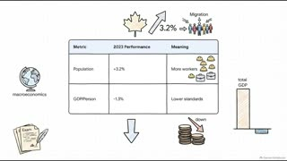
4:352b: GDP grew but GDP per person fell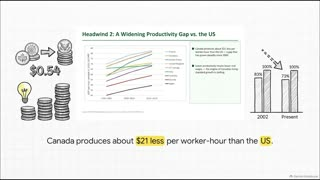
5:212b causes: 54 cents and 73% of US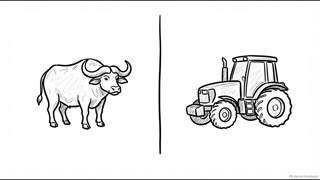
5:492c: diminishing returns and Vietnam's 6% a year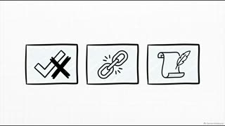
6:53Errors in the 2024 key and checklist
Check these slides
| At | On the slide | What the sources say |
|---|---|---|
| 0:50 | 'Economic Growth' slide carries the subtitle 'Labour Force Growth' in quotes, as if the whole model were labour force growth. | 2024 key appendix: growth comes through two channels, labour force growth and productivity growth (capital deepening, labour quality, innovation), both resting on the institutional environment. |
| 1:25 | Model drawn as a chain: Labour Force, then Productivity, then Institutions, with productivity listed as only capital deepening and innovation. | The two channels run side by side and institutions sit underneath both. Productivity growth also includes labour quality (skill, effort). |
| 4:10 | Redrawn Primer 1 page is garbled ('laboor force', 'aceomulation', 'potential ourput (or pasonisl GDP)') and says trend growth is 'roughly 1% to 2 percent per year'. | Primer 1: Canada's potential output trend has grown by roughly 1.5 to 2 percent per year. |
| 5:35 | Bar chart labels Canada's 73% of US productivity as 'Present'. | Session 8: business productivity was 73% of the US level in 2019, down from 83% in 2002. |
Then work it on the prep page
Read it highlighted in the case reader
Reference
Earlier session videos
These came with the session prep pages. The midterm draws on the same ideas, so they work as a refresher once the four videos above are done. Nothing downloads until you press play.
Primer 1: Understanding the Macroeconomy
Audio · 12:34 · Session 1 Canvas pageThe audio version of the first primer, posted by the course with Session 1.
Economic Prosperity and Progress
Video · 8:22 · Session 3The overview saved with Session 3. It covers both Session 3 primers.
Productivity Growth and the Middle Income Trap
Video · 8:14 · Session 6The overview saved with Session 6. The middle income trap is also the subject of the Wolf reading in the case reader.
Session 6 prep page · Diminishing returns · Wolf, highlighted
The AI Race Canada Needs to Win
Video · 9:04 · Session 8The overview saved with Session 8, on Canada's growth. The Session 8 slides are highlighted in the case reader.
Session 8 prep page · Canada's growth · Session 8 slides, highlighted
Case reader: the papers, highlighted
The real pages of both papers, both keys, the exhibits and four readings, with 126 highlights painted on the words. Red means watch out: a trap that costs marks, or a place where two sources disagree. Yellow means what it means: the economics behind the passage. Each highlight opens a note with a small diagram and a link back to the prep page.
| Document | Highlights | Watch out | What it means |
|---|---|---|---|
| 2025 paper | 20 | 12 | 8 |
| 2025 crop yield chart | 8 | 4 | 4 |
| 2025 answer key | 17 | 6 | 11 |
| 2024 paper and Krugman email | 16 | 8 | 8 |
| 2024 Figure 1a and 1b | 8 | 3 | 5 |
| 2024 answer key | 18 | 7 | 11 |
| Wolf, FT (middle income trap) | 10 | 4 | 6 |
| World Development Report 2024 | 6 | 2 | 4 |
| Session 7 slides | 12 | 4 | 8 |
| Session 8 slides | 11 | 3 | 8 |
| Total | 126 | 53 | 73 |
The night before, open the reader and press Watch out only in its left rail. That leaves the 53 red notes, the mistakes worth avoiding on Monday.
Papers and files
| 2025 paper | Questions only. 4 questions, 40 points |
| 2025 key | Model answers and marking notes |
| 2025 makeup | New Oct 22. Paper and model answers in one file. 4 questions, 50 marks |
| 2024 paper | Questions only. 6 parts, 80 marks |
| 2024 key | Rubrics and a growth model appendix |
| past-midterms/*.pptx | The original decks. The PDFs are copies |
| askmyprof.com | A different practice exam with an AI grade. Online only |
| New slides | S9 Trade and industrial policy · S10 China |
| Exam schedule | Date, time and faculty |
| Prep page | Every question worked, answers hidden first |
| Case reader | The papers and readings, highlighted |
| midterm/README.md | Index of the midterm folder |
| NotebookLM notebook | The notebook that made the videos. Needs your Google sign in |
| notebooklm/sources.md | What the notebook was given |
| notebooklm/focus-video-*.txt | The prompt behind each video |
| 08-update-oct23 | Rules and makeup paper summary added for the new videos |
| Session pages | S3 · S4 · S5 · S6 · S8 |
Q&A log
Follow-up questions get added here, newest first.
The October 22 and 23 announcements changed three things: the exam is closed book with no calculator, you sit in room 1310 by 12:50, and a third past paper (the 2025 makeup, Canada vs Germany on education and productivity) is posted with model answers. Both new videos were made in the same NotebookLM notebook with the makeup paper, the Session 9 and 10 slides and a rules update added as sources. They sit at the top of this page, each with numbered cards to read before and after watching. A video for every class was possible but slower to watch than one video covering all the concepts, and the exam only rewards the concepts, so you got the two-video version.
This page. The four NotebookLM videos sit in study order, each with chapters that start at slide changes, the slides to check against the sources, and links to the matching prep page sections and highlighted pages. The session videos, the case reader and every paper sit under Reference.